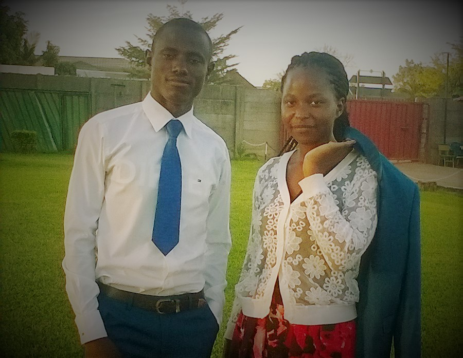
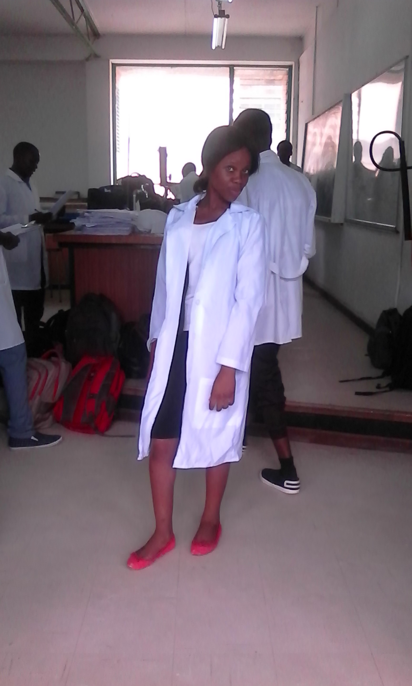
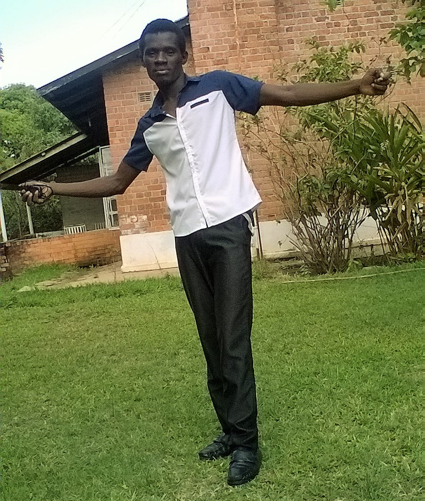
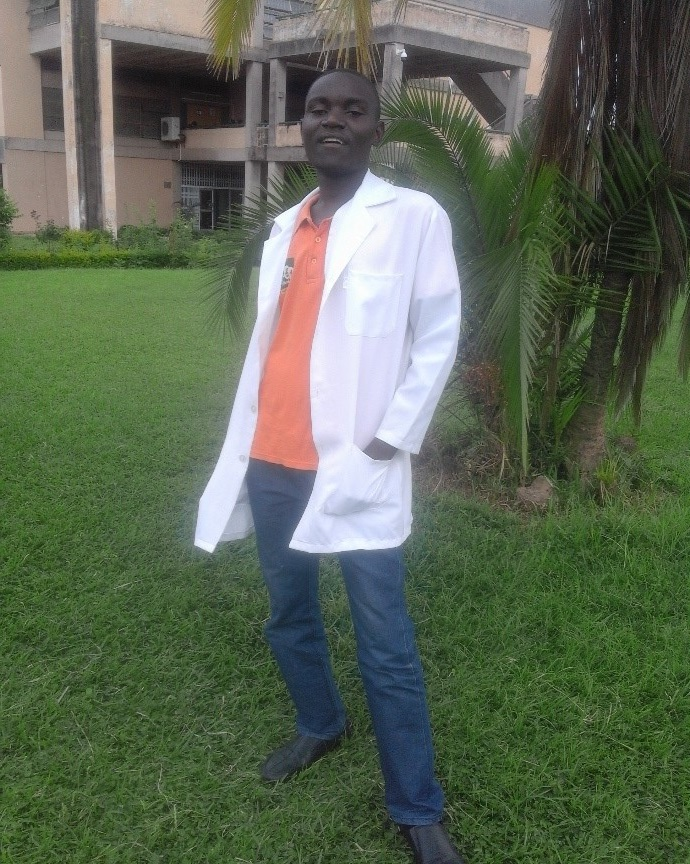

ENOCK NTOKA is an associate student at the COPPERBELT UNIVERSITY studying BSc NQ and aiming to advance into the field of Health Sciences. Born in Chingola on the Copperbelt, received his primary education in Chingola and secondary education in Kitwe at Mitanto Secondary School. During secondary school, he was an active member of JETS Club received different awards in the field of Senior Entomology. After secondary school, he joined A4 TRAINING CENTRE in Kitwe where he taught Biology for over a year and some months until he was finally enrolled at the Copperbelt University. He enjoys playing chess and volley ball His main ambition in academic life is to take an advanced study in the field of senior Entomology and to obtain a PhD in Senior Entomology. .

KELVIN NKANDU is an associate student at the COPPERBELT UNIVERSITY studying BSc NQ and aiming to advance into the field of Health Sciences. Born in Lusaka on the 1st of january 1996, received his primary education in Lusaka and secondary education in Kabwe at Bwacha Secondary School. During secondary school,he was promoted to the highest position a pupil can ever ascend to which is the Head Boy of the school.He was an active member of JETS club. After secondary school,he joined his uncle on the farm to asist him look after the farm. He enjoys playing soccer, chess and Basketball His main ambition in academic life is to take an advanced study in the field of information and technology

NG'ANDU PREVIA is the first year student persuing BSc NQ.She was born on the 10th of September 1996 at Chikankata General Mission Hospital and a fifth born in the family of six, five girls and one boy.After completing her first year would like to study General Medicine.She likes reading novels and visiting new places.

SALIA PHIRI is a first year student at the COPPERBELT UNIVERSITY studying BSc NQ, aiming to pursue a degree in Computer Science. She was born on 25th Novermber 1995,she is the seventh born in a family of eight children with a twin. She started school in 2003 Kaunda Square, she did her junior secondary at Northmead Basic School and finally did her senior secondary at Munali Girls secondary.

KASUNGE ANNABEL PHIRI are my names ,a lady of 20 and born from the family of 4 girls.i was raised by a very hardworking single mother who is a teacher.my home town is lusaka.i am a parttime hair-dresser and i love singin.i intend to pursue a degree in civil engineering after i complete my 1st year as a non quota student.i have always been an academic achiever and by God's grace,my dreams will bebome a reality.

JOSHUA NASILELE was born in August 1994.Did his primary and secondary level of education at Matauka.During his secondary level, he was awarded a certificate of achievement as the best student after writing mock.Not only that but he He is currently persuing the advanced levels at Copperbelt university in the school of mathematics and natural sciences.He intends to major in the school of medicine which is his career in life.He likes reading some novels and playing football as his hobby during his free time.

Born august 1995 in eastern part of Zambia particularly chipata.I grew up there and did my primary and secondary education and attained my grade seven, nine and twelve certificate, currently am pursuing my Batchelor’s degree at the Copperbelt University.
My names are Nankamba Preciuos.I was born on 18th January 1997.I am a first year student at the COPPERBELT UNIVERSITY persuing my bachelor of science under the school of mathematics and Natural sciences.However,i would like to major in software Enginering.
Born December 1996 in southern part of Zambia particularly monze. I grew up there and did my primary and secondary school education and attained my grade seven, nine and twelve certificates. Am currently pursuing my bachelor’s degree at the copperbelt university.